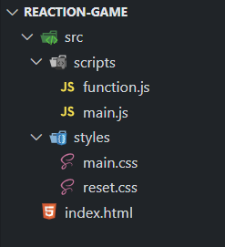
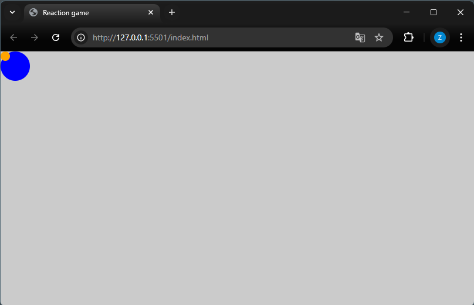
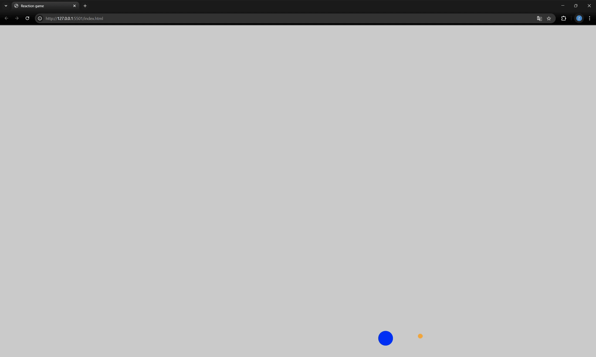
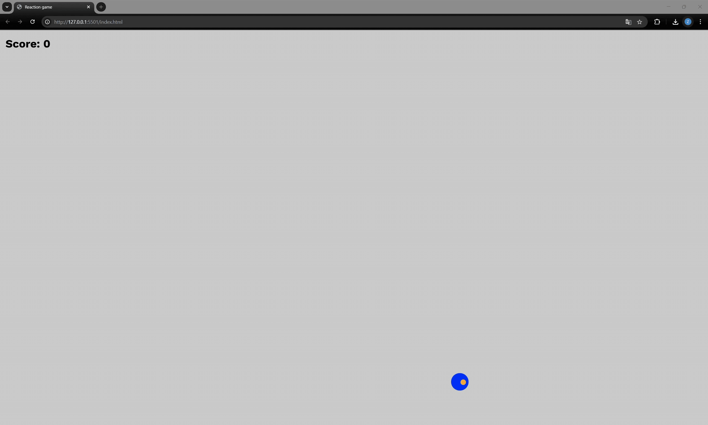
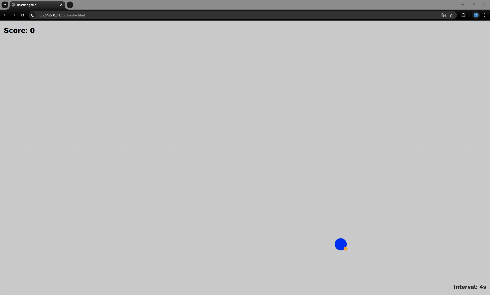

Workshop: Bouw je eigen reactiespel
In deze workshop leer je stap voor stap hoe je onderstaand reactiespel bouwt met HTML, CSS en JavaScript.

Benodigdheden
Om deze workshop te volgen heb je het volgende nodig:

Stappenplan
In dit project ga je stap voor stap een reaction game bouwen met HTML, CSS en JavaScript. Klik zo snel mogelijk op de bal wanneer die verschijnt. Elke juiste klik verhoogt je score en versnelt het interval, waardoor het spel steeds uitdagender wordt. Maar let op: als je naast de bal klikt of te laat reageert, krijg je een Game Over-melding. Aan het einde heb je een volledig werkend spel met scoretelling, een leaderboard en een overzicht van de top 5 scores.
-
Stap 1: Folderstructuur
In deze stap maak je een duidelijke en overzichtelijke mappenstructuur aan voor je project. Dit zorgt ervoor dat je bestanden logisch geordend zijn en je efficiënter kunt werken en je code beter kunt onderhouden.
-
Maak een nieuwe map aan op je computer en geef deze de naam
reaction-game(of kies een naam naar voorkeur). Open vervolgens VS Code en open daarin de zojuist aangemaakte map. Zie de video hieronder voor hulp.
-
Maak in VS Code dezelfde folderstructuur na zoals weergegeven op de afbeelding. Klik daarvoor op het eerste icoontje rechts van de map
reaction-gameom een nieuw bestand aan te maken (zoalsindex.html,main.js,main.cssenreset.css). Gebruik het tweede icoontje om nieuwe mappen aan te maken, zoalssrc,scriptsenstyles. Zorg ervoor dat elk bestand in de juiste map staat zoals in het voorbeeld. -
Start de Live Server door rechtsonder in de blauwe balk van VS Code te klikken op Go Live. Jouw standaardbrowser wordt automatisch geopend en je ziet een blanco webpagina verschijnen. Dit betekent dat alles goed is ingesteld en je klaar bent om te beginnen met bouwen!
-
-
Stap 2: HTML, CSS & JS
-
Open het bestand
index.htmldat je in stap 1 hebt aangemaakt en plak de onderstaande HTML-code erin. Deze code vormt de basisstructuur van je webpagina en koppelt je CSS- en JavaScript-bestanden. Ook voegen we alvast de bal en de aangepaste cursor toe.<!DOCTYPE html> <html lang="en"> <head> <meta charset="UTF-8" /> <meta name="viewport" content="width=device-width, initial-scale=1.0" /> <title>Reaction game</title> <link rel="stylesheet" href="./src/styles/main.css" /> <link rel="preconnect" href="https://fonts.googleapis.com" /> <link rel="preconnect" href="https://fonts.gstatic.com" crossorigin /> <link href="https://fonts.googleapis.com/css2?family=Work+Sans:ital,wght@0,100..900;1,100..900&display=swap" rel="stylesheet" /> </head> <body> <main class="board" id="board"> <div class="custom-cursor" id="custom-cursor"></div> <div class="ball" id="ball"></div> </main> <script src="./src/scripts/function.js"></script> <script src="./src/scripts/main.js"></script> </body> </html> -
Open het bestand
reset.cssen plak de onderstaande code erin. Deze CSS-reset zorgt ervoor dat je layout er in elke browser consistent uitziet.*, *::before, *::after { box-sizing: border-box; } * { margin: 0; } html { height: 100%; } body { min-height: 100%; line-height: 1.5; -webkit-font-smoothing: antialiased; } img, picture, video, canvas, svg { display: block; max-width: 100%; } input, button, textarea, select { font: inherit; } p, h1, h2, h3, h4, h5, h6 { overflow-wrap: break-word; } -
Open het bestand
main.cssen plak de onderstaande CSS-code erin. Hiermee stijlen we de pagina, het speelveld, de bal en de aangepaste cursor.@import url('./reset.css'); body { overflow: hidden; font-family: "Work Sans", sans-serif; cursor: none; } .custom-cursor { position: fixed; width: 1rem; height: 1rem; background-color: orange; border-radius: 50%; pointer-events: none; z-index: 1000; } .board { position: relative; width: 100vw; height: 100vh; background-color: rgb(203, 203, 203); } .ball { position: absolute; width: 50px; height: 50px; background-color: blue; border-radius: 50%; z-index: 500; } -
Open het bestand
function.jsen plak de onderstaande JavaScript-code erin. Dit bestand bevat alle functies die we zullen gebruiken in het spel, zoals het herstarten van het spel, het tonen van het game-over scherm, het bijwerken van de score en het leaderboard, en het animeren van het speelbord.let score = 0; let isClicked = false; let intervalDuration = 4000; let intervalCountdown; let leaderboard = [0, 0, 0, 0, 0]; function moveBall(onFinish) { const $ball = document.getElementById("ball"); const maxX = window.innerWidth - $ball.offsetWidth; const maxY = window.innerHeight - $ball.offsetHeight; const randomX = Math.random() * maxX; const randomY = Math.random() * maxY; $ball.animate( [{ transform: `translate(${randomX}px, ${randomY}px)` }], { duration: 1000, fill: "forwards" } ).onfinish = () => { $ball.style.transform = `translate(${randomX}px, ${randomY}px)`; onFinish?.(); }; } function animateBoardFlash(colorStart, colorEnd, duration = 400) { const $board = document.getElementById("board"); $board.animate( [{ backgroundColor: colorStart }, { backgroundColor: colorEnd }], { duration, easing: "ease-in-out" } ); } function updateScore() { score += 1; document.getElementById("score").innerText = `Score: ${score}`; } function decreaseScore() { score -= 1; document.getElementById("score").innerText = `Score: ${score}`; } function updateIntervalDuration() { intervalDuration = Math.max(1000, intervalDuration - 200); } function startInterval() { moveBall(() => { clearInterval(intervalCountdown); startIntervalTimer(); }); } function startIntervalTimer() { clearInterval(intervalCountdown); const $intervalTimer = document.getElementById("interval-timer"); let timeLeft = intervalDuration; $intervalTimer.innerText = `Interval: ${(timeLeft / 1000).toFixed(2)}s`; intervalCountdown = setInterval(() => { timeLeft -= 10; if (timeLeft < 0) timeLeft = 0; $intervalTimer.innerText = `Interval: ${(timeLeft / 1000).toFixed(2)}s`; if (timeLeft <= 0) { clearInterval(intervalCountdown); gameOver(); } }, 10); } function handleGameRestart() { const $gameOver = document.getElementById("game-over"); const $board = document.getElementById("board"); $gameOver.style.display = "none"; $board.classList.remove("disabled"); score = 0; intervalDuration = 4000; document.getElementById("score").innerText = `Score: ${score}`; updateLeaderboard(); moveBall(); startIntervalTimer(); } function updateLeaderboard() { const $leaderboardList = document.getElementById("leaderboard-list"); $leaderboardList.innerHTML = leaderboard .map((score, index) => `- ${index + 1}${score}
`) .join(''); } function checkLeaderboard() { if (score > leaderboard[4]) { leaderboard.push(score); leaderboard.sort((a, b) => b - a); leaderboard = leaderboard.slice(0, 5); updateLeaderboard(); } } function handleGameOverDisplay() { const $gameOver = document.getElementById("game-over"); const $board = document.getElementById("board"); $gameOver.style.display = "block"; $board.classList.add("disabled"); document.getElementById("end-score").innerText = `Score: ${score}`; } document.addEventListener("mousemove", (event) => { const customCursor = document.getElementById("custom-cursor"); customCursor.style.left = `${event.clientX}px`; customCursor.style.top = `${event.clientY}px`; }); -
Als je alle code correct hebt gekopieerd en geplakt in de juiste bestanden, zie je in je browser nu een pagina met een grijs speelveld, een blauwe bal in de linkerbovenhoek en een oranje bal als cursor. Wanneer je op de bal klikt, gebeurt er nog niets. Dat gaan we toevoegen in de volgende stap!

-
-
Stap 3: Bal laten bewegen
In deze stap voeg je JavaScript toe om de bal te laten bewegen wanneer je erop klikt. Je gebruikt animaties om de bal vloeiend naar een willekeurige positie te verplaatsen. Als je naast de bal klikt, licht de achtergrond kort rood op als visuele feedback.
-
Open het bestand
main.jsen plaats onderstaande code hierin. Sla het bestand op en vernieuw je browser om de werking te testen (Normaal gaat dit automatisch met live server).function onBallClick(event) { event.stopPropagation(); moveBall(); } function onBackgroundClick() { animateBoardFlash("red", "rgb(203, 203, 203)"); } function init() { const $ball = document.getElementById("ball"); const $board = document.getElementById("board"); $ball.addEventListener("click", onBallClick); $board.addEventListener("click", onBackgroundClick); moveBall(); } init(); -
Als alles correct is ingevoerd, beweegt de bal nu automatisch naar een willekeurige positie en verplaatst hij telkens je erop klikt. De oranje cursor volgt je muis over het speelveld, en bij een klik naast de bal licht de achtergrond kort rood op. Alles werkt nu dynamisch dankzij JavaScript!

-
-
Stap 4: Score bijhouden bij klikken
In deze stap voegen we een score toe aan je spel. Elke keer als je op de bal klikt, stijgt je score met 1. Klik je naast de bal, dan gaat er 1 punt af. De score wordt linksboven op het speelveld weergegeven.
-
Vervang de huidige
<main>-tag in jeindex.htmlmet de onderstaande versie. Hiermee voegen we het score-element toe aan de pagina.<main class="board" id="board"> <div class="custom-cursor" id="custom-cursor"></div> <div class="ball" id="ball"></div> <p class="score" id="score">Score: 0</p> </main> -
Voeg de volgende CSS toe onderaan je
main.css. Hiermee positioneer je de score linksboven op het speelveld..score { position: absolute; top: 1rem; left: 1rem; font-size: 2rem; font-weight: 700; color: black; pointer-events: none; } -
Pas nu enkel de inhoud van de functies
onBallClickenonBackgroundClickaan zoals hieronder weergegeven. Je hoeft de rest vanmain.jsniet te wijzigen. Hiermee wordt de score correct bijgewerkt.function onBallClick(event) { event.stopPropagation(); updateScore(); moveBall(); } function onBackgroundClick() { animateBoardFlash("red", "rgb(203, 203, 203)"); decreaseScore() } -
Als je alles correct hebt ingevoerd, zie je nu linksboven je score staan. Klik je op de bal, dan stijgt je score. Klik je ernaast, dan daalt die. De aangepaste cursor werkt ook nog steeds. Goed gedaan!

-
-
Stap 5: Interval & moeilijkheidsgraad
In deze stap bereiden we het spel voor op een dynamischere moeilijkheidsgraad. Als de speler op de bal klikt, wordt het interval verkort, waardoor de bal sneller begint te bewegen. Zo wordt het spel telkens een beetje moeilijker na elke juiste klik.
-
Pas enkel de inhoud van de functie
onBallClickaan zoals hieronder. Je hoeft de rest vanmain.jsniet te wijzigen. Met deze update wordt er automatisch een nieuw interval gestart wanneer er op de bal wordt geklikt, waardoor de bal sneller gaat bewegen naarmate je verder speelt.function onBallClick(event) { event.stopPropagation(); isClicked = true; clearInterval(intervalCountdown); updateScore(); updateIntervalDuration(); startInterval(); } -
Voeg de onderstaande code toe binnen de
<main>-tag inindex.html. Dit element toont het huidige interval. Let op: momenteel toont dit element enkel de visuele waarde. In de volgende stap zullen we deze koppelen aan een game-overlogica wanneer de tijd verstreken is.<div class="interval-timer" id="interval-timer">Interval: 4s</div> -
Voeg de onderstaande CSS-code toe aan
main.css. Deze stijl zorgt ervoor dat het interval-element rechtsonder op het scherm wordt weergegeven..interval-timer { position: absolute; bottom: 1rem; right: 1rem; font-size: 1.5rem; font-weight: bold; color: #262625; pointer-events: none; z-index: 900; } -
Als alles goed werkt, zie je nu dat het spel start zodra je voor het eerst op de bal klikt en wordt er een timer rechtsonder getoond die het huidige interval weergeeft. Dit interval verandert bij elke juiste klik, maar heeft voorlopig nog geen effect op de speluitkomst. In de volgende stap koppelen we deze timer aan een "game over"-bericht als je niet op tijd reageert.

-
-
Stap 6: Game Over & Herstart
In deze stap voeg je een Game Over-scherm toe dat verschijnt wanneer je naast de bal klikt of niet snel genoeg reageert. Het spel pauzeert, toont je eindscore en kan opnieuw worden gestart door op de spatiebalk te drukken.
-
Voeg de onderstaande HTML toe onderaan de
<main>-tag in jeindex.html.<div class="game-over" id="game-over" style="display: none;"> <p class="end-score" id="end-score">Score: 0</p> <p>Game Over</p> <p>Press Space to Restart</p> </div> -
Voeg onderstaande CSS toe aan
main.cssom het Game Over-scherm te stylen en het spel tijdelijk te blokkeren..game-over { position: absolute; top: 50%; left: 50%; transform: translate(-50%, -50%); text-align: center; font-size: 2rem; font-weight: bold; color: red; background-color: rgba(255, 255, 255, 0.9); padding: 1rem 2rem; border-radius: 10px; box-shadow: 0 4px 10px rgba(0, 0, 0, 0.2); z-index: 600; } .game-over .end-score { color: black; font-size: 3rem; } .board.disabled { pointer-events: none; } -
Pas de inhoud van de functie
onBackgroundClickaan zoals hieronder en voeg de functiesgameOverenrestartGametoe aan jemain.js-bestand. Deze code zorgt ervoor dat het spel stopt bij een foute klik, en opnieuw gestart kan worden met de spatiebalk.function onBackgroundClick() { animateBoardFlash("red", "rgb(203, 203, 203)"); gameOver(); } function gameOver() { clearInterval(intervalCountdown); handleGameOverDisplay(); document.addEventListener("keydown", restartGame); } function restartGame(event) { if (event.code === "Space") { document.removeEventListener("keydown", restartGame); handleGameRestart(); } } -
Als alles juist is ingesteld, verschijnt er nu een Game Over-scherm wanneer je naast de bal klikt of als je niet snel genoeg reageert. Je eindscore wordt getoond, en je kunt het spel herstarten door op de spatiebalk te drukken.

-
-
Stap 7: Leaderboard
In deze laatste stap voeg je een Leaderboard toe dat automatisch de vijf hoogste scores onthoudt. Zo kun je jezelf blijven uitdagen en proberen je vorige scores te verbeteren!
-
Voeg de onderstaande HTML toe in je
index.html, net onder het score-element binnen de<main>-tag.<div class="leaderboard" id="leaderboard"> <h3>Top 5 Scores:</h3> <ul id="leaderboard-list"></ul> </div> -
Voeg deze CSS toe aan
main.cssom de leaderboard zichtbaar en goed gepositioneerd te maken..leaderboard { position: absolute; top: 4rem; left: 1rem; font-size: 1.2rem; font-weight: 600; color: #262625; pointer-events: none; } .leaderboard ul { list-style: none; padding-left: 0.5rem; } .leaderboard li { display: grid; grid-template-columns: 1fr 1fr; text-align: center; font-size: 1rem; font-weight: 500; } .leaderboard li span { display: block; } -
Voeg de regel
checkLeaderboard()toe aan het einde van de functiegameOver, zodat na elk spel automatisch wordt gecontroleerd of je score in de top 5 hoort. Voeg daarnaastupdateLeaderboard()toe aan het einde van deinit()-functie, zodat de lijst direct zichtbaar is bij het starten van het spel.function gameOver() { clearInterval(intervalCountdown); handleGameOverDisplay(); checkLeaderboard(); document.addEventListener("keydown", restartGame); } function init() { const $ball = document.getElementById("ball"); const $board = document.getElementById("board"); $ball.addEventListener("click", onBallClick); $board.addEventListener("click", onBackgroundClick); moveBall(); updateLeaderboard(); } -
Je spel toont nu een top 5-scorebord dat automatisch wordt bijgewerkt na elk spel. Je hebt een volledig werkende reaction game gebouwd — inclusief scoretelling, game over-logica en leaderboard.
Bedankt om deze workshop te volgen, en proficiat met het resultaat! GREAT SUCCES 🎯
Jouw eindresultaat zou er nu zo moeten uitzien:
-
-
Stap 8 (optioneel): 💥 Nog moeilijker maken?
Wil je het spel extra uitdagend maken? Laat de bal nog sneller bewegen door het minimale interval te verlagen en de animatiesnelheid aan te passen. Hieronder lees je hoe je dat doet.
-
Open
function.jsen zoek met Ctrl + F naar deze regel in deupdateIntervalDuration()-functie:intervalDuration = Math.max(1000, intervalDuration - 200); -
Verander de waarde
1000naar500om toe te staan dat het interval daalt tot 500 milliseconden (een halve seconde):intervalDuration = Math.max(500, intervalDuration - 200); -
Zoek in
function.jsnaar demoveBall()-functie en ga op zoek naar deze regel (tip: gebruik opnieuw Ctrl + F):{ duration: 1000, fill: "forwards" }Verander
1000naar600milliseconden om de bewegingsanimatie van de bal te versnellen:{ duration: 600, fill: "forwards" } -
Hoe lager de getallen, hoe sneller en moeilijker het spel wordt. Experimenteer met verschillende waarden en daag jezelf uit!
-